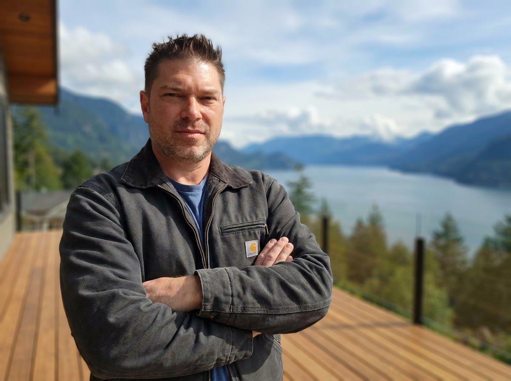

Why Fiduciary Project Management is the Future of Luxury Custom Home Building in Whistler and West Vancouver

Building a custom home in British Columbia’s most premium markets—the snow-laden peaks of Whistler or the rugged cliffs of West Vancouver—is one of the most significant capital investments a real estate investor or family will ever make. Yet, the traditional mechanism for executing these builds is structurally flawed.
For decades, the standard General Contractor (GC) Cost-Plus model has operated within an adversarial, low-transparency "black box." Today, high-net-worth owners are bypassing GCs entirely, transitioning to a modern, open-ledger standard: Fiduciary Project Management (PM).
Here is why fiduciary representation is the only secure, economically sound path to building quiet luxury in the Sea-to-Sky corridor.
1. The Cost-Plus Conflict: Why GCs Inflate Your Build
In a traditional Cost-Plus construction agreement, a General Contractor is paid a percentage markup (usually 15% to 20%) on top of every subcontractor invoice, permit, and material supply sheet.
This model introduces a structural conflict of interest:
- The Margin Markup: If a rock-blasting subcontractor bills $100,000 for a West Vancouver granite cliff excavation, a standard GC marks that up and bills you $115,000.
- The Adversarial Incentive: GCs have zero financial incentive to negotiate lower prices or find efficiencies. The more expensive your trades are, and the longer the project takes, the more capital the GC makes in pure percentage margin.
- The "Black Box" Billing: Many traditional GCs keep their trade accounts private, presenting you with a single aggregated monthly bill. You have no visibility into whether sub-trade pricing is inflated or if vendor discounts are being kept by the builder.
The Fiduciary PM Alternative
Under a Fiduciary Project Management agreement, Keystone Possibilities Ltd. operates strictly as your owner advocate. We charge a clean, flat fee for management.
- Direct Trade Contracting: Every subcontractor contract is signed directly between you and the trade. You pay the direct trade rate.
- 100% Open Ledger: Every single invoice, municipal permit receipt, and WorkSafeBC clearance letter is uploaded live to your personal client portal (PWA).
- Retained Savings: If we negotiate a $15,000 volume discount on luxury curtain wall glass, that saving is passed directly back to your project ledger, keeping more capital in the build.
2. Navigating Extreme Corridor Geotechnical Challenges
Building a custom estate in the Sea-to-Sky corridor requires far more than aesthetic planning—it demands advanced engineering-grade civil expertise. GCs who lack structural and civil backgrounds often pass these engineering management fees down with heavy markups.
Whistler: High Snow-Loads & Net-Zero Thermal Envelopes
Whistler chalet construction requires engineering for massive alpine snow-loads (often exceeding 6.0 to 10.0 kPa). Massive timber post-and-beam elements must be structurally computed, and sub-zero winter microclimates require advanced building envelope design (highly insulated, Net-Zero structures with zero thermal bridging).
Our principal's structural engineering background guarantees that these critical structural calculations and seismic connections are audited daily on the job site—not outsourced blindly to third parties.
West Vancouver: Cliffside Engineering & Steep Slopes
Building along the steep granite slopes of West Vancouver requires high-performance civil interventions. We coordinate and manage:
- Geotechnical bedrock anchoring and rock-pinning.
- Extreme structural steel cantilevers designed to float seamlessly over Howe Sound.
- Specialized micro-piles and root-sensitive foundations to protect old-growth forest roots while securing structural integrity.
3. The Keystone Shield: Comprehensive Client Protection
As a fully Licensed BC Builder (#52603), Keystone Possibilities Ltd. combines flat-fee, transparent fiduciary management with the full power of statutory asset protection:
-
National 2-5-10 Year Home Warranty:
Our builds are fully backed by BC’s premium institutional warranty standards (2 years on materials/labor, 5 years on building envelope, 10 years on structural load-bearing components). GCs without licensed builder status cannot issue these credentials. -
Subcontractor Risk Management:
We pre-qualify, audit, and coordinate every trade. We enforce strict Commercial General Liability (CGL) insurance thresholds and verify active WorkSafeBC clearances before any trade steps onto your site. -
Owner-Representation:
We manage the entire project flow—concept, zoning bylaws, development permits (DPs), geotechnical clearances, framing, and final architectural millwork. We represent you in weekly site surveys, permitting meetings, and engineering inspections.
Keeping Your Capital in the Dirt
Luxury custom home building is an exercise in asset protection. By adopting a fiduciary model, you ensure that every dollar you invest is converted directly into real concrete, premium steel, beautiful cedar, and flawless millwork—not lost to general contractor percentage inflation.
Before breaking ground on your Whistler chalet or West Vancouver estate, request a formal Feasibility Study and Project Analysis from Keystone Possibilities. Let us analyze your zoning parameters, environmental constraints, and structural needs with absolute transparency.
Weekly site walkthroughs and structural engineering breakdowns.